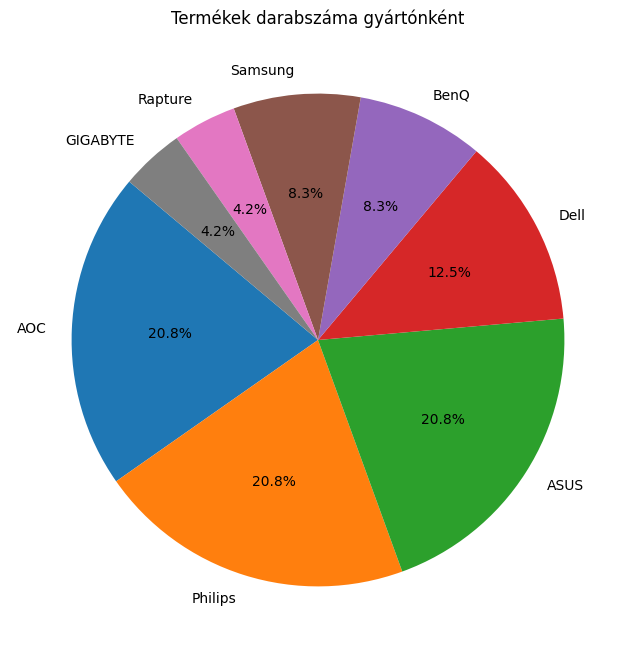
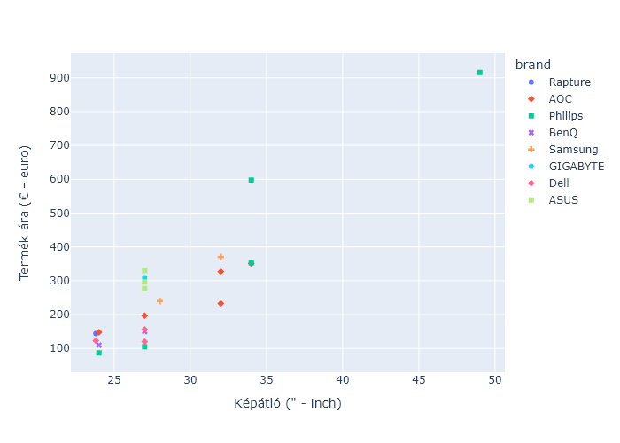

Webshop termékeinek vizualizálása#
Ebbe a fejezetben a választott webshopból korábban begyűjtött adatokat fogjuk elemezni.
Szükséges könyvtárak letöltése, importálása#
# %pip install pandas
# %pip install matplotlib
# %pip install plotly
# %pip install kaleido==0.1.0post1
import pandas as pd
import matplotlib.pyplot as plt
import plotly.express as px
from IPython.display import Image
Adatok betöltése#
df = pd.read_csv("output_alza.csv", delimiter=",", header=0)
df.head(50)
| item | url | description | price | |
|---|---|---|---|---|
| 0 | 23,8" Rapture VIDE IFF24144 | https://www.alza.sk/23-8-rapture-vide-iff24144... | LCD monitor - uhlopriečka 23,8“ (60,45 cm), Fu... | 143,89 € |
| 1 | 34" AOC CU34G2X/BK Gaming | https://www.alza.sk/34-aoc-cu34g2x-bk-gaming-d... | LCD monitor prehnutý, Ultra Wide QHD 3440 × 14... | 351,16 € |
| 2 | 34" Philips 346P1CRH | https://www.alza.sk/34-philips-346p1crh-d61333... | LCD monitor prehnutý, Ultra Wide QHD 3440 × 14... | 597,40 € |
| 3 | 49" Philips 499P9H | https://www.alza.sk/49-philips-499p9h-d5547590... | LCD monitor prehnutý, Dual QHD 5120 × 1440, VA... | 915,62 € |
| 4 | 24" Philips 243V7QJABF | https://www.alza.sk/24-philips-243v7qdjabf-d51... | LCD monitor Full HD 1920×1080, IPS, 16:9 širok... | 86,90 € |
| 5 | 27" AOC C27G2ZE/BK Gaming | https://www.alza.sk/27-aoc-c27g2zebk-gaming-d6... | LCD monitor prehnutý, Full HD 1920×1080, VA, 1... | 196,90 € |
| 6 | 24" BenQ GW2480 | https://www.alza.sk/24-benq-gw2480-d5100547.htm | LCD monitor Full HD 1920×1080, IPS, 5 ms, 60Hz... | 109,76 € |
| 7 | 28" Samsung U28R550 | https://www.alza.sk/28-samsung-u28r550-d573077... | LCD monitor 4K 3840 × 2160, IPS, 16:9 širokouh... | 239,90 € |
| 8 | 27" GIGABYTE M27Q | https://www.alza.sk/27-gigabyte-m27q-d6237997.htm | LCD monitor Quad HD 2560×1440, IPS, 16:9 širok... | 309 € |
| 9 | 27" Dell S2721HN Style | https://www.alza.sk/27-dell-s2721hn-d6153043.htm | LCD monitor Full HD 1920×1080, IPS, 16:9 širok... | 119,90 € |
| 10 | ASUS ProArt PA329C | https://www.alza.sk/asus-proart-pa329c-d568409... | LCD monitor 4K 3840 × 2160, IPS, 16:9 širokouh... | 769 € |
| 11 | 27" Dell S2721H Style | https://www.alza.sk/27-dell-s2721h-d6158324.htm | LCD monitor Full HD 1920×1080, IPS, 16:9 širok... | 155,90 € |
| 12 | 23,8" Dell S2421H Style | https://www.alza.sk/23-8-dell-s2421h-d6158322.htm | LCD monitor Full HD 1920×1080, IPS, 16:9 širok... | 122,90 € |
| 13 | 24" AOC C24G2AE/BK Gaming | https://www.alza.sk/24-aoc-c24g2aebk-gaming-d6... | LCD monitor prehnutý, Full HD 1920×1080, VA, 1... | 147,85 € |
| 14 | 32" AOC C32G2ZE/BK Gaming | https://www.alza.sk/32-aoc-c32g2zebk-gaming-d6... | LCD monitor prehnutý, Full HD 1920×1080, VA, 1... | 233 € |
| 15 | 27" ASUS VG279QM Gaming HDR | https://www.alza.sk/27-asus-vg279qm-gaming-hdr... | LCD monitor Full HD 1920×1080, IPS, 16:9 širok... | 276,90 € |
| 16 | 32" AOC U32E2N | https://www.alza.sk/32-aoc-u32e2n-d6217876.htm | LCD monitor 4K 3840 × 2160, VA, 16:9 širokouhl... | 326,63 € |
| 17 | 27" Philips 273V7QDSB | https://www.alza.sk/27-philips-273v7qdsb-d5077... | LCD monitor Full HD 1920×1080, IPS, 16:9 širok... | 104,90 € |
| 18 | 34" Philips 345B1C | https://www.alza.sk/34-philips-345b1c-d5800564... | LCD monitor prehnutý, Ultra Wide QHD 3440 × 14... | 352,78 € |
| 19 | 32" Samsung U32R590 | https://www.alza.sk/32-samsung-u32r590cw-d5597... | LCD monitor prehnutý, 4K 3840 × 2160, VA, 16:9... | 369,96 € |
| 20 | 27" BenQ GW2780 | https://www.alza.sk/27-benq-gw2780-d5100553.htm | LCD monitor Full HD 1920×1080, IPS, 5 ms, 60Hz... | 149,90 € |
| 21 | 27" ASUS ProArt PA278QV | https://www.alza.sk/27-asus-proart-pa278qv-d58... | LCD monitor Quad HD 2560×1440, IPS, 16:9 širok... | 296,26 € |
| 22 | 27" ASUS TUF Gaming VG27AQL1A | https://www.alza.sk/27-asus-tuf-gaming-vg27aql... | LCD monitor Quad HD 2560×1440, IPS, 16:9 širok... | 329,96 € |
| 23 | ASUS TUF Gaming VG27AQ | https://www.alza.sk/asus-tuf-gaming-vg27aq-d56... | LCD monitor Quad HD 2560×1440, IPS, 16:9 širok... | 269 € |
Gyártó meghatározása külön oszlopba#
brands = [
"Rapture",
"AOC",
"Philips",
"Dell",
"HP",
"ASUS",
"Samsung",
"BenQ",
"GIGABYTE",
]
def find_brand(text):
for brand in brands:
if brand in text:
return brand
return ""
df["brand"] = df["item"].apply(find_brand)
df.head(5)
| item | url | description | price | brand | |
|---|---|---|---|---|---|
| 0 | 23,8" Rapture VIDE IFF24144 | https://www.alza.sk/23-8-rapture-vide-iff24144... | LCD monitor - uhlopriečka 23,8“ (60,45 cm), Fu... | 143,89 € | Rapture |
| 1 | 34" AOC CU34G2X/BK Gaming | https://www.alza.sk/34-aoc-cu34g2x-bk-gaming-d... | LCD monitor prehnutý, Ultra Wide QHD 3440 × 14... | 351,16 € | AOC |
| 2 | 34" Philips 346P1CRH | https://www.alza.sk/34-philips-346p1crh-d61333... | LCD monitor prehnutý, Ultra Wide QHD 3440 × 14... | 597,40 € | Philips |
| 3 | 49" Philips 499P9H | https://www.alza.sk/49-philips-499p9h-d5547590... | LCD monitor prehnutý, Dual QHD 5120 × 1440, VA... | 915,62 € | Philips |
| 4 | 24" Philips 243V7QJABF | https://www.alza.sk/24-philips-243v7qdjabf-d51... | LCD monitor Full HD 1920×1080, IPS, 16:9 širok... | 86,90 € | Philips |
Árak számértékké konvertálása#
def convert_price(price):
if type(price) != float:
price = price.replace(" €", "").strip()
price = price.replace(",", ".")
price = float(price)
return price
df["price"] = df["price"].apply(convert_price)
df.head(5)
| item | url | description | price | brand | |
|---|---|---|---|---|---|
| 0 | 23,8" Rapture VIDE IFF24144 | https://www.alza.sk/23-8-rapture-vide-iff24144... | LCD monitor - uhlopriečka 23,8“ (60,45 cm), Fu... | 143.89 | Rapture |
| 1 | 34" AOC CU34G2X/BK Gaming | https://www.alza.sk/34-aoc-cu34g2x-bk-gaming-d... | LCD monitor prehnutý, Ultra Wide QHD 3440 × 14... | 351.16 | AOC |
| 2 | 34" Philips 346P1CRH | https://www.alza.sk/34-philips-346p1crh-d61333... | LCD monitor prehnutý, Ultra Wide QHD 3440 × 14... | 597.40 | Philips |
| 3 | 49" Philips 499P9H | https://www.alza.sk/49-philips-499p9h-d5547590... | LCD monitor prehnutý, Dual QHD 5120 × 1440, VA... | 915.62 | Philips |
| 4 | 24" Philips 243V7QJABF | https://www.alza.sk/24-philips-243v7qdjabf-d51... | LCD monitor Full HD 1920×1080, IPS, 16:9 širok... | 86.90 | Philips |
Képátló meghatározása külön oszlopba#
def find_screensize(item):
for word in item.split():
if '"' in word:
size = word.replace('"', "").replace(",", ".")
try:
return float(size)
except ValueError:
return ""
df["size"] = df["item"].apply(find_screensize)
df.head()
| item | url | description | price | brand | size | |
|---|---|---|---|---|---|---|
| 0 | 23,8" Rapture VIDE IFF24144 | https://www.alza.sk/23-8-rapture-vide-iff24144... | LCD monitor - uhlopriečka 23,8“ (60,45 cm), Fu... | 143.89 | Rapture | 23.8 |
| 1 | 34" AOC CU34G2X/BK Gaming | https://www.alza.sk/34-aoc-cu34g2x-bk-gaming-d... | LCD monitor prehnutý, Ultra Wide QHD 3440 × 14... | 351.16 | AOC | 34.0 |
| 2 | 34" Philips 346P1CRH | https://www.alza.sk/34-philips-346p1crh-d61333... | LCD monitor prehnutý, Ultra Wide QHD 3440 × 14... | 597.40 | Philips | 34.0 |
| 3 | 49" Philips 499P9H | https://www.alza.sk/49-philips-499p9h-d5547590... | LCD monitor prehnutý, Dual QHD 5120 × 1440, VA... | 915.62 | Philips | 49.0 |
| 4 | 24" Philips 243V7QJABF | https://www.alza.sk/24-philips-243v7qdjabf-d51... | LCD monitor Full HD 1920×1080, IPS, 16:9 širok... | 86.90 | Philips | 24.0 |
Kördiagram készítése#
brand_counts = df["brand"].value_counts()
plt.figure(figsize=(8, 8))
plt.pie(brand_counts, labels=brand_counts.index, autopct="%1.1f%%", startangle=140)
plt.title("Termékek darabszáma gyártónként")
plt.show()

Pont XY diagram készítése#
fig = px.scatter(
df, x="size", y="price", color="brand", symbol="brand", hover_data="item"
)
fig.update_layout(xaxis_title='Képátló (" - inch)', yaxis_title="Termék ára (€ - euro)")
#fig
fig.write_image("scatter_plot.png")
Image(filename="scatter_plot.png")
